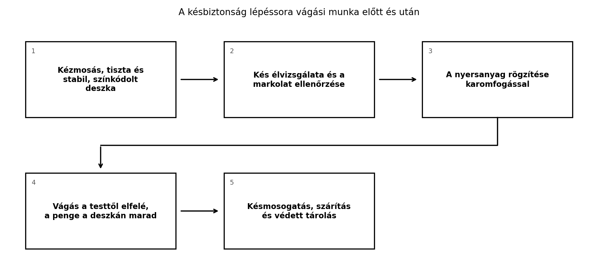

A tankonyhán reggel „mise en place”-t készítesz: zöldséget kell aprítanod a levesbe, húst szeletelned, és közben folyamatosan használod az edényeket. Ha a kés tompa vagy a deszka csúszik, a munka lassú és balesetveszélyes lesz. Ha nem a megfelelő méretű GN-edényt választod, a hűtőben nem fér el az előkészített anyag, vagy a szállítás során kilöttyen a mártás. Ezért ebben az alfejezetben az edények, kéziszerszámok, valamint a késbiztonság és a szabványos vágásformák alapjait dolgozzuk fel.
A konyhai kézi munka alapja mindig ez a hármas: a megfelelő edény, a megfelelő eszköz, a megfelelően karbantartott kés. A vágásformák egyenletessége nem öncélú díszítés: ha minden zöldségdarab azonos méretű, azonos idő alatt puhul meg, így a levesben vagy párolt köretben nem lesznek félig nyers vagy szétfőtt darabok.
Tiszta, csúszásmentes pulton színkódolt deszkák sorakoznak. A zöldségdeszkán megmosott sárgarépák, a narancssárga kockák egyforma méretűek. A séf kés pengéje éles, markolata száraz. A tálcák mellett falilista mutatja, hogy melyik deszka melyik nyersanyaghoz tartozik. Az előkészített anyagokat fedhető GN-tálcákban hűtőbe helyezik. Ebben a képben nincs rendetlenség: minden szerszám a munkafolyamatot, a higiéniát és a biztonságot szolgálja.
Definíció. A konyhai edény olyan, hőkezelésre, tárolásra vagy szállításra szolgáló eszköz, amely élelmiszerrel közvetlenül érintkezik. Anyaga nem mindegy, mert a hővezetés, a tisztíthatóság, a karc- és savállóság, valamint a tömeg a technológiát is befolyásolja.
| Anyag | Előny | Hátrány | Tipikus felhasználás |
|---|---|---|---|
| Rozsdamentes acél | Erős, saválló, mosogatógépben tisztítható, semleges íz | Ha vékony, leéghet benne az étel | Fazekak, lábosok, GN-tálcák, szűrők |
| Öntöttvas | Kiváló hőmegtartás, egyenletes hő | Nehéz, rozsdásodhat, ápolni kell | Sütőedények, hosszú párolás, steak-serpenyő |
| Alumínium | Könnyű, jó hővezető | Savas ételekben elszíneződhet; puha, deformálódhat | Kisegítő edények, tepsik (bevonattal ellátva) |
| Teflon vagy más tapadásmentes bevonat | Kevés zsiradékkal sütés, könnyű tisztítás | Fémeszköztől, túlhevítéstől sérül; a bevonat kopva veszít a hatásából | Serpenyők, palacsintasütők |
Szabály. A bevonatos edényben tilos fém lapáttal, késsel vagy villával keverni, mert a karcolás tönkreteszi a tapadásmentes felületet. A bevonatkárosodás után az edényt ki kell vonni az élelmiszer-kapcsolatból, mert leváló részek kerülhetnek az ételbe.
A konyhában leggyakrabban rozsdamentes edényekkel dolgozol. Semleges ízük miatt a mártások, levesek, savas pácok is biztonságosan készíthetők bennük. Az öntöttvas edényt a sütőben is használhatod, például hosszan párolt szegyhez vagy ropogós héjú kenyérhez.
Definíció. A GN (gastronorm) szabványos konyhai tároló- és szállítóedény-rendszer. A vendéglátó berendezéseket – például sütőt, hűtőt, melegentartó pultot – erre a méretrendre alakítják ki. A GN méretjelölés a befoglaló méretet és a mélységet jelöli, például „GN 1/1-65”. A „GN 1/1” a teljes méret, a törtszámok a teljes edény arányos osztását jelentik.
A GN 1/1-es edény hozzávetőleges külső befoglaló mérete 530 ×
325 mm (ellenőrizendő: gyártói adat).
| GN méret | Jellegzetes felhasználás |
|---|---|
| GN 1/1 | Nagy mennyiségű köret, sütőtál, rendezvénytálca |
| GN 1/2 | Tálcás köretek, hússzeletek hűtése |
| GN 1/3 | Kisebb tálcák, levesbetétek, desszertek |
| GN 2/3 | Keskenyebb sütő- és melegentartó tálca |
| GN 1/6, GN 1/9 | Fűszerek, kis kiegészítők, előkészített díszítők |
A mélység szavatolja, hogy mennyi étel fér az edénybe: a gyakori mélységek 20, 40, 65, 100, 150 és 200 mm. A 65 mm-es tálca kisebb körethez elegendő; a 100–150 mm-es mélyebb tálca húsleveshez vagy nagyobb darabos ételhez alkalmas. A fedő és a fóliázás segít a szállítás biztonságában.
Számítás. Egy GN 1/1-65 edény űrtartalmának becslése.
Adott: külső befoglaló méret , mélység . Keresett: az űrtartalom felső becslése literben. Képlet: . Behelyettesítés: . Eredmény: a téglatest-térfogat körülbelül ; ez felső becslés, mert a perem és a ferde falak miatt a belső tér kisebb. Ellenőrzés: a gyártói táblázat szerinti űrtartalom kb. 9 l (ellenőrizendő), ennek 80–90 %-a (kb. 7–8 l) tölthető biztonságosan.
A GN-rendszer lényege, hogy a kisebb edények hézag nélkül kitöltik a GN 1/1 keretet: két GN 1/2, három GN 1/3, egy GN 2/3 és egy GN 1/3, hat GN 1/6 vagy kilenc GN 1/9 ugyanakkora helyet foglal el, mint egy GN 1/1. Ezért fér bármelyik kombináció ugyanarra a sütő-, hűtő- vagy melegentartó-sínre.
Az ábra alsó sora mutatja, mekkora a különbség a 20 és a 200 mm-es mélység között: ugyanakkora alapterületen a 200 mm-es edény tízszer annyit fogad be. Figyelj arra, hogy a jelölés első része (pl. 1/3) a felülnézeti méret, a második (pl. 65) a mélység mm-ben. A HTML-kiadásban kiválaszthatod a méretet és a mélységet, és az oldal a fenti képlettel kiszámolja az űrtartalom felső becslését.
A kéziszerszámok a kisgépek között is jelen vannak, de a mindennapi apró munkákhoz elengedhetetlenek. A gépi szeletelő, daráló, botmixer biztonságát a Konyhai gépek és berendezések alfejezet tárgyalja. Most a kézi eszközöket rendszerezzük.
| Kéziszerszám | Feladata | Biztonsági megjegyzés |
|---|---|---|
| Séf kés | Szeletelés, aprítás, zöldség- és húselőkészítés | Éles, stabil fogás, testtől elfelé vágás |
| Hámozó | Zöldség, gyümölcs vékony héjának eltávolítása | A pengét mindig a testtől elfelé húzd |
| Filéző kés | Hal filézése, vékony hártyák lefejtése | A hajlékony penge különösen óvatos kezelést igényel |
| Kenyérvágó kés | Ropogós héjú pékáru szeletelése recés pengével | A recés él ne csússzon meg a héjon |
| Fakanál, fa lapát | Savas és hőérzékeny ételek keverése, edénysúrolás nélkül | A fát alaposan el kell mosni és szárítani |
| Szilikon spatula | Krémek kaparása, keverése | Csak élelmiszer-ipari szilikont használj |
| Habverő | Tojáshab, mártások, dresszingek keverése | A drótvégek ne érjenek a kezedbe |
| Merőkanál | Levesek, mártások adagolása | A nyél hőálló legyen |
| Szűrő, szita | Tésztaszűrés, levek átszűrése | A forró gőzre figyelj |
| Húsklopfoló | Hússzelet vékonyítása, rostlazítás | Ne a csuklóból üss, hanem a lapos felületet vezesd |
| Maghőmérő | Az étel belső hőmérsékletének ellenőrzése | Fertőtlenített heggyel szúrd be |
Az alábbi tabló felső része az alapedényeket mutatja (a serpenyőknél a három anyagot a felület jelölése különbözteti meg), az alsó része a táblázat kéziszerszámait ugyanabban a sorrendben, kiegészítve a munkalapokon gyakran szereplő habszedővel és konyhai csipesszel.
A húsklopfolónak ⑨ két oldala van: a sima oldallal lapítunk, a recés oldal szétroncsolja a rostokat, ezért ritkán használjuk. A nyers és a kész ételhez külön csipeszt ⑫ használj. A HTML-kiadásban a szerszámra mutatva megjelenik a táblázat „Feladata” és „Biztonsági megjegyzés” oszlopa.
Higiénia. A nyers hús, baromfi, hal és zöldség
vágódeszkája nem cserélhető fel tisztítás nélkül. A keresztszennyeződés
megelőzésére a magyar vendéglátói gyakorlatban gyakori a
színkódolt deszkarendszer
(ellenőrizendő: az üzemi utasítás és az aktuális NÉBIH-útmutató, mert a színkód nem jogszabályban rögzített egységes rendszer).
| Szín | Gyakori használat | Fontos példa |
|---|---|---|
| Zöld | Zöldség, gyümölcs | saláta, sárgarépa, alma |
| Piros | Nyers hús | marha, sertés, bárány |
| Sárga | Nyers baromfi | csirkecomb, pulykamell |
| Kék | Nyers hal, hidegvérű állat | ponty, tilápia |
| Barna | Kész, hőkezelt étel | sült hús, főtt zöldség |
| Fehér | Kenyér, tejtermék | szendvics, sajt |
Szabály. Az üzemben a saját színkód-utasítás a mérvadó. A munkalapokon és a deszkatároló felett mindig jelezd, hogy melyik szín mire való. Ha egy deszka megsérül, mélyen bekarcosodik, azonnal cseréld, mert a barázdákban baktériumok telepedhetnek meg.
A deszkatárolóban minden deszka álló helyzetben, egymástól elválasztva szárad. A színt mindig felirat (és itt betűjel, piktogram) egészíti ki, mert a színkiosztás üzemenként eltérhet, és a színtévesztő dolgozónak is egyértelműnek kell lennie. A (b) kép a csúszásgátló alátétet, a (c) kép a mélyen bekarcolódott, cserélendő deszkát mutatja. A HTML-kiadásban a deszkára mutatva megjelenik, mire való, és mi nem kerülhet rá.
A kés a szakács legfontosabb kéziszerszáma. A jó kés nem csak a márkától függ: a penge formájának, hosszának és a karbantartásnak együtt kell működnie.
Definíció. A séf kés (franciakés, chef’s knife) hosszú, enyhén ívelt pengéjű, sokoldalú kés. A 20–25 cm-es pengével apríthatsz, szeletelhetsz és zöldséget vághatsz. A hámozó kés rövid, hegyes pengéjű, kézhez simuló eszköz a pontos, kisebb vágásokhoz.
A kés fő részei: - Penge: a vágó munkát végző rész. - Él: a penge megélezett, vágó oldala. - Fok: a penge vastag, életlen gerince. - Hegy: a penge csúcsa, finom bemetszésekhez. - Markolat: a kézben tartott rész, csúszásmentes legyen. - Tüske: a penge meghosszabbítása a markolatban, stabilitást ad. - Kézvédő: a penge és a markolat közötti vastagabb átmenet, védi az ujjakat.
Az (a) rajzon a markolat ki van vágva, így látszik, hogy a tüske ⑥ a penge folytatása, és szegecsek rögzítik a markolatban – ettől stabil a kés. A (b) tabló azonos léptékben mutatja a késtípusokat: a filéző kés pengéje vékony és hajlékony, a csontozókésé rövidebb és merev, a kenyérvágó kés éle recés. A pengehosszak példák (ellenőrizendő: gyártói adat).

Szabály. A kést a markolatánál fogd úgy, hogy a hüvelykujjad és behajlított mutatóujjad a penge tövénél, a kézvédő mellett fogja a pengét; az ujjaid ne kerüljenek a penge élére. A szabad kezeddel karomfogást használj: az ujjaidat behajlítod, hogy az ujjpercek vezessék a pengét, az ujjbegyek védve maradnak.
A (b) képen a karomfogást a vágás irányából látod: a penge lapja a középső ujjpercekhez simul, az ujjbegyek hátrébb vannak, ezért a penge nem érheti el őket. Vágás közben a kés hegye a deszkán marad, és a karom vágásról vágásra hátrál. Az alsó sor három tipikus hibát mutat; a kerek nyersanyagot (répa, burgonya, hagyma) előbb félbevágjuk, és lapos oldalára fektetve vágjuk tovább. A HTML-kiadásban a képeken lépésenként végig lehet menni.
Szabály. A kést mindig testedtől elfelé vágva vezesd, és a vágás után a pengét tedd le a deszkára. Soha ne tartsd a kést zsebben, törölgetés közben ne húzd a pengét a törlőruhán keresztül.
Élezés. A kés élességét nem az ujjaddal ellenőrzöd,
hanem papírteszttel: ha a penge éles, tisztán, szakadás nélkül elvág egy
függőlegesen tartott papírlapot. A fenőacél nem
köszörüli a kést, hanem az él egyenetlenségeit rendezi, ezért
rendszeres, könnyű használata segít. A tompult kés újraélezésére
fenőkő szolgál; a kő szemcsézettségét a penge
állapotához igazítjuk, és a pengét folyamatosan azonos szögben kell
vezetni. A tanulói gyakorlathoz az oktató által beállított szöget
használd, általában 15–20° között
(ellenőrizendő: a kés gyártójának ajánlása).
Az (a) képen a fenőacél hegye csúszásmentes alátéten áll, így nem csúszik meg; a kést a saroktól a hegy felé húzod le, felváltva a két oldalon, és az acél kézvédője óvja az ujjaidat. A kis betét azt mutatja, hogy a penge lapja kb. 15–20°-ot zár be az acéllal. A (c) metszet a két művelet különbségét mutatja: a fenőacél csak egyenesre rendezi az elhajlott élt, a fenőkő anyagot vesz le, és új élt köszörül. A HTML-kiadásban a három kép lépésenként nagyítható.
Tárolás. A kést szárazon, élvédővel ellátva, késtartó blokkban, mágneses késtárolón vagy fiókba rögzítve tárold. A fa markolatú kést ne áztasd, mert a fa megrepedhet. A rozsdamentes pengét is töröld szárazra, mert a vízkő és sófolt rontja az élt.
Tilos. Az eső, leeső kést tilos elkapni. Lépj hátra, engedd leesni, majd a sérült eszközt ellenőrizd. Ugyancsak tilos a kést magad felé húzni, és tilos a kést forró zsír közelében úgy letenni, hogy a penge a zsiradék fölé érjen. Kést soha ne tegyél a mosogatóvízbe vagy más edények közé: a kést külön, azonnal, a penge fokánál tartva mosd el és töröld szárazra. A kést hegyével lefelé, a tested mellett, pengével hátrafelé vidd, és szólj a kollégáknak („kés mögötted”). Kést soha ne adj át éllel a másik felé; tedd le a pultra, és onnan vegye fel.
A kés vágáson kívül is veszélyes: vivés, letétel, tárolás és mosogatás közben ugyanúgy figyelni kell rá. Az alábbi négy képpár mindegyikében bal oldalon a helyes, jobb oldalon a hibás gyakorlat látható.
Vivéskor a kést a tested mellett, hegyével lefelé, éllel hátrafelé tartod, és szólsz („Kés!”), ha valaki mögött haladsz el. Letételkor a kés a deszka közepére kerül, éllel a testedtől elfelé – soha ne rejtsd ruha alá, és ne lógjon ki a pult szélén. A kést azonnal, külön mosd el; ha a mosogatóvízbe dobod, nem látszik, és belenyúlsz. A leeső kés után nem kapunk: hátralépünk, és hagyjuk leesni. A HTML-kiadásban a négy képpár egyenként nézhető.
Definíció. A szabványos vágásforma olyan, hagyományosan rögzített méretű darabolás, amely az ételek egyenletes hőkezelését, esztétikus megjelenését és adagolhatóságát biztosítja. Az alapformák méreteit megtanuljuk, mert a szakmai vizsgán és a konyhai munkalapokon is gyakran ezzel a névvel kérik az előkészítést.
| Vágásforma | Méret és alak | Példa alapanyag | Jellemző felhasználás |
|---|---|---|---|
| Julienne | Nagyon vékony hasáb, kb. | sárgarépa, zeller, alma | levesbetét, saláta, gyors párolás |
| Brunoise | Apró kocka, kb. | sárgarépa, vöröshagyma, paprika | mártásalap, raguk, hideg előételek |
| Macédoine | Kicsi kocka, kb. | vegyes zöldség | zöldségköret, orosz saláta |
| Paysanne | Vékony, kb. lapocska | répa, zeller, burgonya | parasztos levesbetét, gyors köret |
| Chiffonade | Vékony levélszalag, kb. 1–2 mm széles | saláta, spenót, bazsalikom | díszítés, levesbetét, friss fűszer |
| Tournée | Hordó vagy olajbogyó alakú, kb. 5–7 cm hosszú, gyakran 7 vágott oldallal | burgonya, sárgarépa | franciás díszköret, párolt zöldség |
A felső sorban a milliméterskálán mérheted össze a formákat: a brunoise kockája egy julienne-csík végéből vágott darab, a macédoine kockája ennél kb. két és félszer nagyobb élű. Az alsó sor a munkalap vágási sorrendjét mutatja: hasáb → 2 mm-es lapok → 2 mm-es csíkok (julienne) → 2 mm-es kockák (brunoise). A HTML-kiadásban a formára mutatva megjelenik a mérete és a felhasználása, a vágási sorrend pedig lépésenként lejátszható.
Megjegyzés. A méretek a klasszikus konyhatechnika
általánosan használt tanulási értékei; az egyes tanműhelyek vagy üzemek
kissé eltérhetnek
(ellenőrizendő: a kerettanterv és az üzemi munkautasítás).
Továbbvitt eredmény. A fenti vágásméreteket használjuk a Zöldségek és gyümölcsök előkészítése alfejezetben, amikor a zöldségeket az étel hőkezelési idejéhez és tálalási képéhez igazítjuk: a julienne és a paysanne gyorsan puhul, a tournée lassabban, a brunoise az alapmártásokhoz ad apró, egyenletes zöldségkockákat.
Cél. A tanuló gyakorolja a szabványos vágásformák méreteit és a biztonságos, egyenletes vágást.
Eszközök és anyagok. Séf kés, hámozó, vastag, stabil zöldségdeszka, mérővonalzó, tálcák, kézi szűrő, tisztított sárgarépa és burgonya, friss salátalevél, tiszta hűtőtálca fedővel.
Biztonsági korlát. A késes gyakorlatot tankonyhán vagy oktatói felügyelettel végezd; otthon csak a leírt biztonsági feltételekkel, éles kés nélkül ne gyakorold a tournée-formát.
Higiéniai előkészület. Moss kezet, viselj tiszta kötényt. A zöldséget folyóvízben mosd meg; a burgonyát hámozás után is öblítsd. Cseréld a deszkát, ha nyers húst érintett.
Lépések. 1. Hámozd meg a sárgarépát, és vágd le a két végét. 2. Vágd 4 cm hosszú hengerekre, majd téglalap alakúra faragd: vágd le az oldalakat, hogy stabil „hasábokat” kapj. 3. Szeleteld a hasábot körülbelül 2 mm-es lapokra, majd a lapokat 2 mm-es csíkokra. Ebből lesz a julienne. 4. A julienne-t fordítsd el, és vágd 2 mm-es kockákra. Ebből lesz a brunoise. 5. Készíts nagyobb hasábokat, majd 5 mm-es kockákat. Ebből lesz a macédoine. 6. A visszamaradt zöldségdarabokból vágj 10 × 10 mm-es, 1–2 mm vastag lapokat. Ez a paysanne. 7. A salátaleveleket mosd, szárítsd, halmozd egymásra, sodorj belőlük szoros tekercset, és 1–2 mm széles szalagokra vágd. Ez a chiffonade.
Ellenőrzési pontok. Mérd meg a darabokat vonalzóval. A julienne hossza 40 mm, keresztmetszete 2 × 2 mm legyen. A brunoise kocka 2 mm-es, a macédoine 5 mm-es legyen. A chiffonade szalagok egyenletesen vékonyak legyenek. Kóstold meg a zöldséget, de csak mosás és hámozás után, és ellenőrizd, hogy nincs földíz, héjmaradék vagy romlott rész.
Dokumentálás. Jegyezd fel a munkalapra, melyik formát milyen alapanyagból készítetted, percenként hány grammot vágtál, és milyen hibát vettél észre. A tanulói kóstolás és mérés hűtött tárolás után is bemutatható.
Mérhető követelmények. A vágásformák mérete a klasszikus alaptáblázat szerint: julienne , brunoise , macédoine , paysanne , chiffonade 1–2 mm széles. A darabok legalább 90 %-a közelítőleg azonos méretű legyen. A vágott felületek tiszták, nem cafatosak, a zöldség nem nyomódott össze.
Érzékszervi követelmények. A zöldség friss illatú, a színe élénk, a felülete nem száradt ki. A burgonyát víz alatt vagy fedve tárold, hogy ne barnuljon meg a levegőn. A késen nincs zsír, ételmaradék, a markolata nem csúszik.
Kés és deszka ellenőrzése. A penge éle egyenletes, nincs csorba; a deszka nem csúszik, nincs mély vágásnyoma, és a színkódjának megfelelően használtad.
Hiba: A zöldségdarabok különböző méretűek, ezért a levesben egy részük szétfő, más részük kemény marad. Ok: nem alakítottak ki szabályos hasábból kiinduló vágást, hanem gyorsan, különböző darabokat aprítottak. Helyes gyakorlat: előbb faragd a zöldséget szabályos hasábbá, majd abból készítsd a csíkokat és kockákat.
Hiba: A nedves, csúszós deszkán a kés megcsúszik, és a tanuló megvágja az ujját. Ok: a deszka alá nem tettek csúszásgátlót, és a munkafelület nedves volt. Helyes gyakorlat: stabil, tiszta, száraz felületű deszkát használj, alá nedves konyharuhát vagy csúszásgátlót tegyél.
Hiba: A tompa kés miatt az aprítás lassú, a zöldség kicsúszik, a vágás cafatos. Ok: nem használtak fenőacélt, és a tompa penge nagyobb erőkifejtést igényel. Helyes gyakorlat: a munkakezdés előtt ellenőrizd az élességet, karbantartott késsel vágj. A tompa kés gyakran veszélyesebb, mert csúszik.
Hiba: A tapadásmentes serpenyő karcolt, és a bevonat darabjai az ételbe kerülhetnek. Ok: fém eszközt használtak, vagy az edényt üresen túlhevítették. Helyes gyakorlat: fából, hőálló műanyagból vagy szilikonból készült lapátot használj, és ne hevítsd üresen a bevonatos edényt.
Egy menzai tankonyhában a tanuló a leveszöldséget úgy aprította, hogy a répát először nagyobb darabokra törte, majd különböző méretű kockákat vágott. A konyhai gyakorlatvezető észrevette, hogy a brunoise méretűnek szánt anyagban 1 cm-es darabok is voltak. Amikor a zöldségleves hőkezelése megtörtént, a kicsi kockák szétfőttek, a nagyobbak kellemetlenül roppanósak maradtak. A hiba nem higiéniai, hanem technológiai volt, de a vendégeknél minőségi panaszt okozott. A tanuló új feladatot kapott: szabályos hasáb faragása után újrabrunoise-t készített, és a vonalzóval ellenőrizte a méreteket. A második adag levesben már minden zöldség egyenletesen puhult meg. Tanulság: az előkészítés pontossága közvetlenül meghatározza a kész étel minőségét.
1. feladat (A) Nevezd meg a kés három részét, és mondd el, mire való a fenőacél.
2. feladat (A) Párosítsd a vágódeszka színeket a leggyakoribb nyersanyagcsoporthoz: zöld, piros, sárga, kék.
3. feladat (B) Számold ki egy GN 1/2-100 edény űrtartalmának felső becslését literben. A GN 1/1-100 külső befoglaló felülete , a mélység ; az 1/2-es edény a teljes alapterület felét foglalja el.
4. feladat (B) Rendezd a vágásformákat a leghosszabb élük szerint növekvő sorrendbe: macédoine, julienne, paysanne, brunoise.
5. feladat (C) Tervezz egy zöldségleveshez előkészítési munkamenetet. Írd le, milyen késeket, deszkákat és GN-tálcákat használnál, és hogyan csoportosítanád a vágásformákat a hőkezelési sorrend szerint.
6. feladat (D) A gyakorlati munkalap szerint készíts sárgarépából julienne-t és brunoise-t. Mérd meg 10–10 darab hosszát és vastagságát, számítsd ki az átlagot, és írd le, melyik darab tért el a szabványtól, és mi lehetett az oka.
Önellenőrzés – válaszok
1. feladat megoldása
A kés részei például a penge, az él és a markolat. A fenőacél az él egyenetlenségeit rendezi, de a tompult pengét nem köszörüli.
2. feladat megoldása
Zöld: zöldség, gyümölcs; piros: nyers hús; sárga: nyers baromfi; kék: nyers hal. Színkód gyakori, de üzemenként ellenőrizendő.
3. feladat megoldása
Adott: 1/1-100 térfogata . Az 1/2-es ennek fele. . Ez felső becslés (külső méretből, ferde falak nélkül); a gyártói érték kb. 6,5 l (ellenőrizendő). Ellenőrzés: nagyjából fele a 1/1-100-asnak, ami jó.
4. feladat megoldása
Leghosszabb él szerint növekvő sorrend: brunoise (2 mm) < macédoine (5 mm) < paysanne (10 mm) < julienne (40 mm). Ha térfogatot kérnénk: brunoise (8 mm³) < paysanne 1 mm vastagon (100 mm³) < macédoine (125 mm³) < julienne (160 mm³); a paysanne 1,5–2 mm vastagon már nagyobb a macédoine-nál.
5. feladat megoldása
Leveszöldséghez: zöld deszka, séf kés, hámozó, mérővonalzó, GN 1/3-65 a zöldség hűtésére. A hosszú hőkezelésű répát macédoine-ra, a gyorsabban puhuló zellert paysanne-ra, a friss zöldfűszert chiffonade-ra vágnám. A vágásformákat külön tálcán hűtöm, hogy a sorrend szerint adagolható legyen.
6. feladat megoldása
A tanulói mérésnél: ha 10 julienne-csík hossza például 40, 41, 39, 42, 40, 41, 38, 40, 41, 40 mm, az összeg , az átlag . A 38 mm-es csík azért tért el, mert a hasáb nem volt párhuzamosan faragva. Helyesbítés: a hasáb oldalait ismét párhuzamosra vágjuk, mielőtt csíkokat készítünk.
A konyhai edény anyaga a hővezetés, a tisztíthatóság és az ételbiztonság miatt fontos. A savas ételeket rozsdamentes edényben készítsd; a tapadásmentes bevonatot fémeszközzel ne karcolj. A GN-rendszer szabványos méret- és mélységjelölést használ, a GN 1/1-65 számított űrtartalma körülbelül . A vágódeszkák színkódja a keresztszennyeződést csökkenti, de az üzemi utasítás a mérvadó. A séf kést stabilan, testtől elfelé vezetve használd, a leeső kést ne kapd el. A vágásformák mérete a hőkezelés egyenletességét és a tálalást is meghatározza: julienne , brunoise , macédoine , paysanne , chiffonade 1–2 mm széles, tournée 5–7 cm hosszú hordó alak. Ezeket használjuk a Zöldségek és gyümölcsök előkészítése alfejezetben.
(ellenőrizendő: gyártói adatlap, üzemi eszközlista).(ellenőrizendő: az intézményi higiéniai utasítás és a NÉBIH-útmutató).(ellenőrizendő: a képzési kerettanterv és az üzemi munkautasítás).(ellenőrizendő: a késgyártó ajánlása).